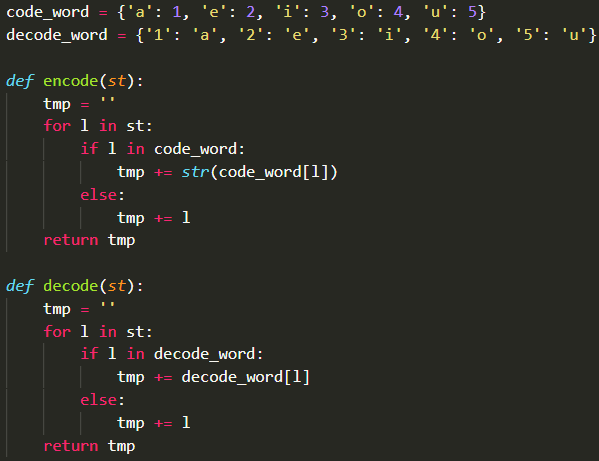

1
Шифровка гласных
легкоавтопроверка
Создай функцию encode(), которая заменяет буквы по схеме: a → 1, e → 2, i → 3, o → 4, u → 5. Например, encode("hello") → "h2ll4".
Создай функцию decode(), которая заменяет цифры обратно на буквы: decode("h2ll4") → "hello".
Показать ответ (сначала попробуй сам!)
def encode(st):
for i, v in enumerate('aeiou', start=1):
st = st.replace(v, str(i))
return st
def decode(st):
for i, v in enumerate('aeiou', start=1):
st = st.replace(str(i), v)
return st